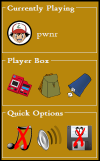
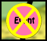

On the left hand side of the board, a menu displays the current player and a few options. To roll and start moving, click the dice cup image in the Player Box. If you want to use items first/instead, click on the backpack icon to open your item bag. To view your Pokémon and their current state, click the Pokédex icon. If you are unhappy with certain game settings but you don't want to go back to the Options screen, you can change some quick settings in the Options Box.

When it is your turn, roll a die to see how far you will move.
You have to move the full amount of steps that you rolled, and you have to choose a single direction to go in.
This means that you can't move a couple steps forward and then turn around to go back a bit.
The only exception to this rule is Cinnabar Island. If you reach the island, you can stop and stay there, regardless of the amount of steps you had left.
Instead of rolling, you can choose to fly to a Town or City if you have a "Fly" item card.
If you happen to land on a space that is already occupied by another player, you have to go 1 step further.
This does not apply to cities or towns, in which multiple players can be present.
The game will calculate the available spaces and highlight them with a bright yellow X in a cirle. Click on one of these to move.
